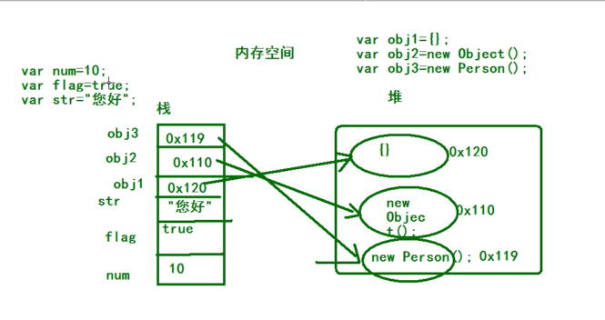

原文出处:本文由博客园博主jane_panyiyun提供。
原文连接:https://www.cnblogs.com/jane-panyiyun/p/11970987.html
原文连接:https://www.cnblogs.com/jane-panyiyun/p/11970987.html
-
原始数据类型: number, string, boolean, undefined, null, object
-
基本类型(简单类型), 即值类型: number, string, boolean
-
复杂类型(引用类型): object
-
空类型:undefined, null
存储空间
值类型的值在哪一块空间中存储? 栈中存储
引用类型的值在哪一块空间中存储? 对象在堆上存储, 地址在栈上存储
见下图：

值类型和引用类型的传递
判断下面的值：
练习1：
var num1 = 10;
var num2 = num1;
num1 = 20;
console.log(num1);//20
console.log(num2);//10
练习2：
var num = 50;
function f1(num) {
num = 60;
console.log(num);//60
}
f1(num); //50
console.log(num);//50
练习3：
var num1 = 55;
var num2 = 66;
function f1(num, num1) {
num = 100;
num1 = 100;
num2 = 100;
console.log(num);//100
console.log(num1);//100
console.log(num2);//100
}
f1(num1, num2);
console.log(num1);//55
console.log(num2);//100
console.log(num);// 报错
练习4：
function Person(name, age, salary) {
this.name = name;
this.age = age;
this.salary = salary;
}
function f1(person) {
person.name = "ls";
person = new Person("aa", 18, 10);
}
var p = new Person("zs", 18, 1000);
console.log(p.name); //zs
f1(p);
console.log(p.name); //ls
画图理解：